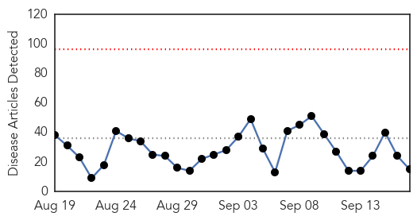
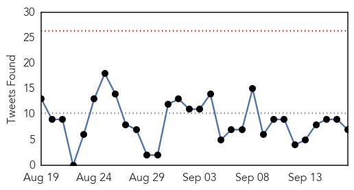
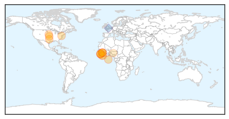

Influenza
30-Day Web Trend
4 alerts, 0 warnings

30-Day Twitter Trend
3 alerts, 0 warnings

Article Locations

Article Confidences

Top Articles:
- 0.998
- Flu season hits NH; three test positive for influenza virus
- 0.998
- Cascade City-County Health Department hosting flu shot clinics - KRTV.com
- 0.992
- Cascade City-County Health Department hosting flu shot clinics
- 0.989
- Mason County Health Department receives shipment of flu vaccines
- 0.985
- What You Need to Know About the 2015-2016 FLU SEASON
- 0.982
- This year's flu vaccine better than last year: US
- 0.975
- HEALTH AWARENESS
- 0.951
- Flu Season Arrives Early in New Hampshire - Story
- 0.943
- Time for your flu shot; this year’s vaccine has arrived
- 0.913
- FDA panel recommends Fluad, possibly the first U.S. boosted flu jab
- 0.911
- Hospital Employee Flu Vaccination Rates Expected to be Strong
- 0.901
- Barnes: It's time to get your flu shot
- 0.891
- It’s time for this year’s updated flu vaccine
- 0.860
- No new reported cases of bird flu since August
- 0.841
- No new reported cases of bird flu since August
- 0.834
- N85m lost to bird flu outbreak
- 0.796
- Flu shot clinics begin in Great Falls Sept. 22
- 0.790
- Influenza Vaccination Coverage Among Health Care Personnel — United States, 2014–15 Influenza Season
- 0.787
- Three Simple Steps to Fight the Flu
- 0.636
- S. Korea issues bird flu alert following suspected cases at 2 duck farms
- 0.600
- USAID provides $2 million to battle animal diseases
- 0.516
- USAID helps Vietnam prevent pandemic threats
Top Tweets:
-
No tweets found for Sep 17, 2015
Ebola
30-Day Web Trend
0 alerts, 0 warnings

30-Day Twitter Trend
0 alerts, 0 warnings

Article Locations
Article Confidences

Top Articles:
- 0.998
- Report Highlights Lessons Learned from Texas Hospital during Ebola Crisis
- 0.998
- Rapid response to new Ebola infection in Bombali, Sierra Leone
- 0.996
- National Emergency Operations Centers Support Long-Term Public Health Infrastructure in West Africa
- 0.993
- The aftermath of Ebola sparks a rethink about aid
- 0.984
- AIDS on steroids: comparing the spread of Ebola and AIDS in Africa
- 0.979
- Dying to Live by Samuel Kargbo
- 0.974
- Nigeria Confirms 2 New Ebola Cases
- 0.968
- New Sierra Leone Ebola Cases Frustrate Efforts to End Outbreak, Articles
- 0.968
- American Cameraman has Ebola After Working in Liberia for NBC News
- 0.937
- Georgia's response to Ebola strengthened its hospital system, health officials say
- 0.911
- State Dept. Issues Sierra Leone Travel Warning, Sept. 17, 2015
- 0.867
- Power of prayer heals Ebola in Liberia
- 0.810
- Tens of Thousands of Births Remain Unregistered
- 0.793
- Getting Liberian children back into school as nation is declared Ebola-free
- 0.652
- UBA Supports Movie on War against Ebola, Articles
Top Tweets:
- 0.983
- RAPIDE ran clinical trials for two potential treatments for Ebola virus disease: brincidofovir (Liberia) and TKM-130803 (Sierra Leone).
- 0.982
- Guinea reports Ebola-free week, but Sierra Leone has 5 cases - CIDRAP http://t.co/oUDmzx4HKe ebola EVD
- 0.897
- Sacra: Ebola Vaccine May Be Game Changer - Christian Broadcasting Network http://t.co/Mx3aWORq7Q ebola EVD
- 0.894
- Ebola vaccines face daunting path to approval - Science /AAAS http://t.co/pBfpieinj0 ebola EVD
- 0.871
- Georgia tracked 1400 people exposed to Ebola - Savannah Morning News http://t.co/CW7lwtFRWv ebola EVD
- 0.868
- Confusion and Fear of Ebola Delayed Treatment for Some Kids - Live Science http://t.co/kAeFSlPZYR ebola EVD
- 0.821
- Experimental Ebola drug ZMapp gets fast track status from FDA - CNN http://t.co/hW88AjiBxE ebola EVD
- 0.811
- UBA Supports Movie on War against Ebola - THISDAY Live http://t.co/WlEZrMKwE8 ebola EVD
- 0.754
- Global Ebola Partnering 2010-2015 - PR Newswire (press release) http://t.co/ev4MwJcOTM ebola EVD
- 0.723
- Ebola survivor to speak at Mars Hill fundraiser - Times Daily http://t.co/WSJUCX2y1z ebola EVD
- 0.637
- 17 Sept - news pouch on avianflu avianinfluenza Ebola EbolaResponse MERS is here: http://t.co/jPX9Nju1k2
- 0.594
- RT: Eurosurv: From SARS to Ebola – 10 years of disease prevention and control at ECDC https://t.co/hWi2eyPbvZ h/t tetano
- 0.586
- Musicians' Union to Honor Artists Today for Songs Against Ebola - Liberian Daily Observer http://t.co/9uF2ra3ZPs ebola EVD
- 0.554
- FDA Fast-Tracks Experimental Ebola Drug ZMapp - http://t.co/FMQyohd10H http://t.co/vvry7xjlgz ebola EVD
- 0.554
- FDA Fast-Tracks Experimental Ebola Drug ZMapp - http://t.co/FMQyohd10H http://t.co/jSd1dKxw89 ebola EVD
- 0.524
- Aid agencies urged to sustain Ebola data advances - http://t.co/oXbQeldPQA http://t.co/jtyT9DuSrv ebola EVD
- 0.510
- UBA Supports Movie on War Against Ebola - http://t.co/NaiI6Jl8yj http://t.co/a1oBMAjQrN ebola EVD